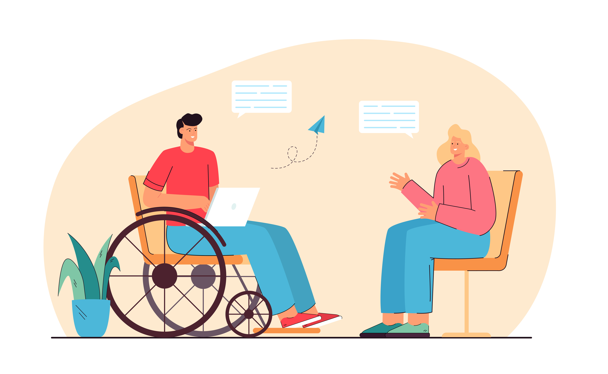

Somos uma API em construção e desenvolvimento continuo, nosso objetivo é facilitar o meio de portadores de necessidade especiais que precisam de algum produto com os que estão doando produtos usados ou novos para assim facilitar os encontros por meio de entidades beneficentes que receberiam os produtos de acordo com o local cadastrado.
